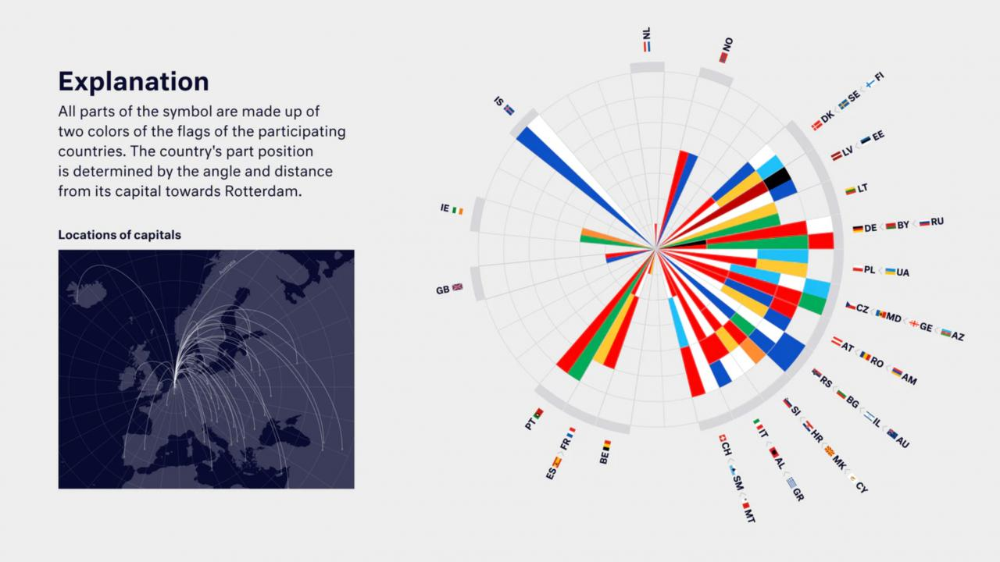

In December 2020, the logo of Eurovision 2021 was revealed. The new design is inspired by the world map with Rotterdam as the beating heart of Europe in May 2021. “The logo connects Rotterdam with the capitals of the participating countries and symbolises coming together, regardless of the form,” says Sietse Bakker, the Executive Producer of the event.

Like last year, the logo and concept was developed by agency Clever ° Franke, which generated the logo using software developed in-house. The design of the 2020 edition was awarded a European Design Award and a Red Dot Design Award. Co-founder Gert Franke said they "extended the style from last year to 2021" and retained the "simple, intelligent, minimalist and experimental" elements but then added a "festive touch, to celebrate the return of the Eurovision Song Contest."